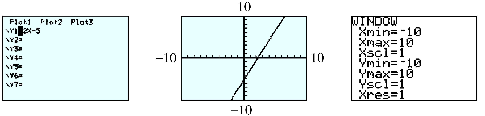
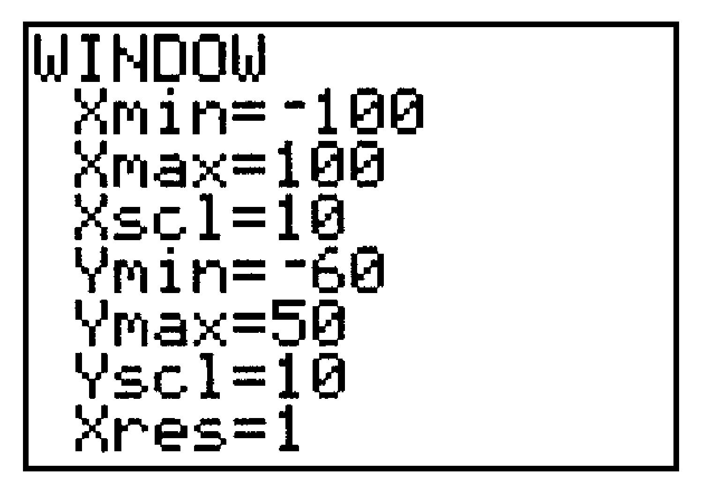

Section B.4 Graphing an Equation
We can graph equations written in the form \(y = \) (expression in x). The graphing keys are located on the top row of the keypad. There are two steps to graphing an equation:
Entering the equation
Setting the graphing window
Subsection Standard Window
The standard window displays values from \(-10\) to \(10\) on both axes.
Example B.31.
-
Press Y= and enter \(2X-5\) after \(Y_1=\) by keying in
\begin{align*} 2~ \boxed{X, T, \theta, n} ~ \boxed{{}-{}} ~ 5 \amp\amp\amp\text{Use the } \boxed{X, T, \theta, n} ~ \text{ to enter }X. \end{align*} -
Press ZOOM \(6\) to set the standard window, and the graph will appear (see Figure B.32).
Figure B.32.
You can press 2nd WINDOW to see the settings for the standard window. \(Xscl = 1\) means that the tick marks on the \(x\)-axis are spaced \(1\) unit apart.
Press 2nd MODE to Quit the graph and return to the Home screen, where we enter computations. From the Home screen, press GRAPH to return to the graph.
Subsection Tracing
The calculator can display the coordinates of selected points on the graph. Press the TRACE key to see a "bug" blinking on the graph. The coordinates of the bug are displayed at the bottom of the screen. Use the left and right arrow keys to move the bug along the graph, as shown in Figure B.33. Note that the Trace feature does not show every point on the graph!
Example B.34.
Use the Trace to find the point on the graph with \(x=-3\text{.}\) Press
\(\qquad\qquad\) TRACE (-) \(3\) ENTER
The bug is off the bottom of the screen, but the coordinates are still shown.
Subsection Multiple Graphs
You can enter more than one graph at a time. Press ↓ to enter a second equation at \(Y_2 =\text{,}\) at \(Y_3 =\text{,}\) and so on. When Tracing, press the ↑ and ↓ keys to move from one graph to another.
To turn off a graph without deleting its equation, press and move the cursor over the \(=\) sign in the equation. Press ENTER to deactivate that equation. (When you move the cursor away, the \(=\) sign is no longer highlighted.) To reactivate the equation, move the cursor back over the \(=\) sign and press ENTER again.
Subsection Setting the Window
Of course, the standard window is not suitable for every graph.
Example B.35.
Graph \(y= 0.01x^2- 50\) in the window
-
Press Y= and enter \(0.01X^2-50\) by keying in
\begin{equation*} 0.01 ~ \boxed{X,T,\theta,n}~\boxed{x^2}~\boxed{{}-{}} 50 \hphantom{blank} \text{Use the } \boxed{X,T,\theta,n}\text{ key to enter} X. \end{equation*} -
Press WINDOW and enter the settings as shown in Figure B.36. Use the up and down arrow keys to move from line to line. Then press GRAPH.
Figure B.36.
Subsection Intersect Feature
We can use the calculator to find the intersection point of two graphs:
Enter the equations for the two graphs in the Y= menu.
Choose window settings so that the intersection point is visible in the window.
Press 2nd TRACE \(5\) to activate the intersect feacture.
Use the left and right arrow keys to position the bug near the intersection point.
Respond to each of the calculator’s questions, First curve?, Second curve?, and Guess? by pressing ENTER. The coordinates of the intersection point are then displayed at the bottom of the screen.
Figure B.37 shows one of the intersection points of \(y = 0.01x^2 - 50\) and \(y = -0.5x\text{.}\)

Subsection Other Windows
The ZDecimal (Zoom Decimal) window, accessed by pressing ZOOM \(4\text{,}\) shows \(x\)-values from \(-4.7\) to \(4.7\) only, but the Trace feature shows "nice" \(x\)-values in increments of \(0.1\text{.}\)
The ZInteger (Zoom Integer) window shows nice \(x\)-values in increments of \(1\) unit. Access the ZInteger window as follows: Press ZOOM \(8\text{,}\) move the bug with the arrow keys to the center of your new window, and press ENTER.
The ZSquare window, accessed by pressing ZOOM \(5\text{,}\) makes the tick marks on both axes have the same size. In this window, squares look like squares, circles look like circles, and all angles appear true.
"Friendly" Windows: If the difference between Xmin and Xmax is a multiple of \(94\text{,}\) the Trace feature gives nice values for \(x\text{.}\) A useful example of a friendly window is \(Xmin=-9.4\text{,}\) \(Xmax= 9.4\text{.}\)
Troubleshooting.
If the graph is not visible, you may need to adjust your window. Or, the equation may not be activated. Press Y= and check to see if the \(=\)sign is highlighted.
If you get a range error, ERR: WINDOW RANGE, quit the message and press WINDOW. Alter the window settings so that Xmin is smaller than Xmax and so that Ymin is smaller than Ymax.
If you press and get an unfamiliar window, or if the axes are not visible in the ZStandard window, you may need to return the Mode or Format menus to their default settings. See Troubleshooting in Section B.1.
If you get a dimension error, ERR: INVALID DIM, you may have a StatPlot turned on. Press 2nd Y= \(4\) ENTER to turn off the StatPlots.
If the bug does not move along the curve, TRACE may not be activated. Press TRACE and then the left or right arrow key.
If you get the error, ERR: INVALID, you have probably entered a value of \(x\) that is outside the window. Adjust the window settings accordingly.
If the \(x\)-axis or \(y\)-axis is too thick, the tick marks are too close together. Press WINDOW and make Xscl or Yscl larger. Set \(Xscl=0\) or \(Yscl =0\) to remove the tick marks.
If you get ERR: NO SIGN CHNG when using the intersect feature, the calculator did not find any intersection point within the current window. Alter the window settings so that the two curves meet within the window. If the two curves are tangent, the calculator may simply fail to find the point of intersection.